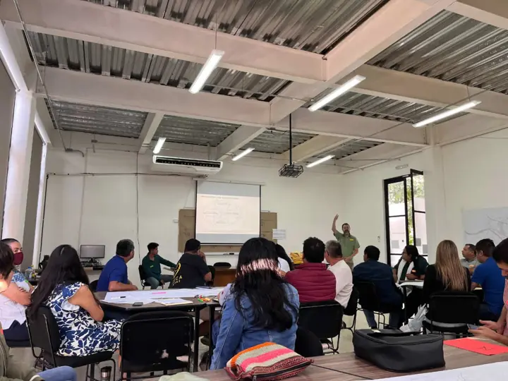

TALLER 1Valorar el valle
Un mapa parlante, una línea del tiempo y colores sobre un mapa grande: verde para lo valioso, rojo para lo que está en riesgo. Salieron los manantiales, las acequias, los naranjales y las huertas; y también El Higuerón, la extracción de arena y la lotificación entre El Salitrillo y Las Trancas.
Lo que salióLas reglas existen pero no se cumplen, y no está claro quién decide. Consenso: hace falta un proyecto colectivo.